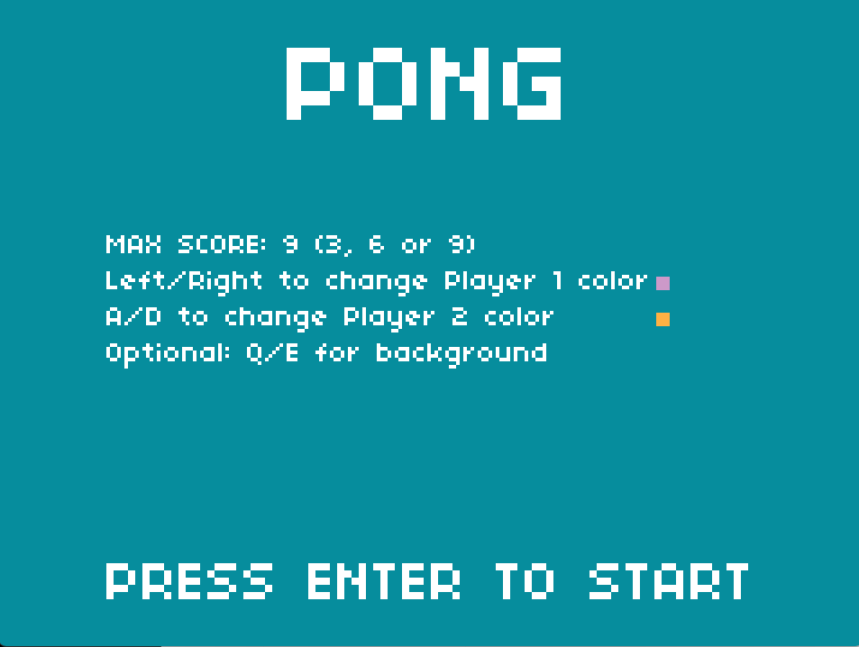
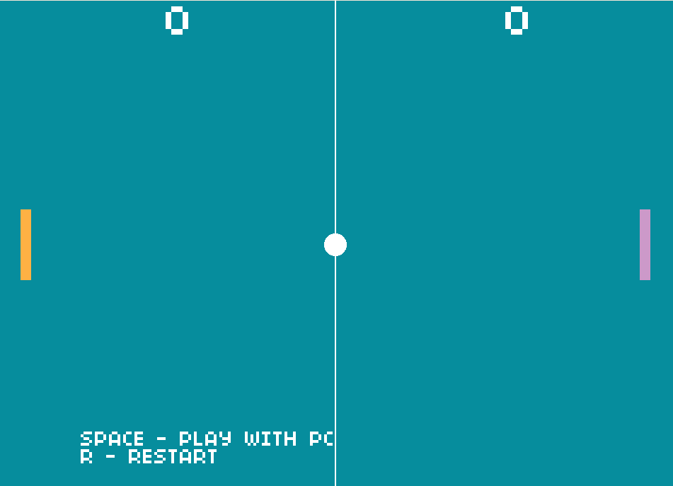
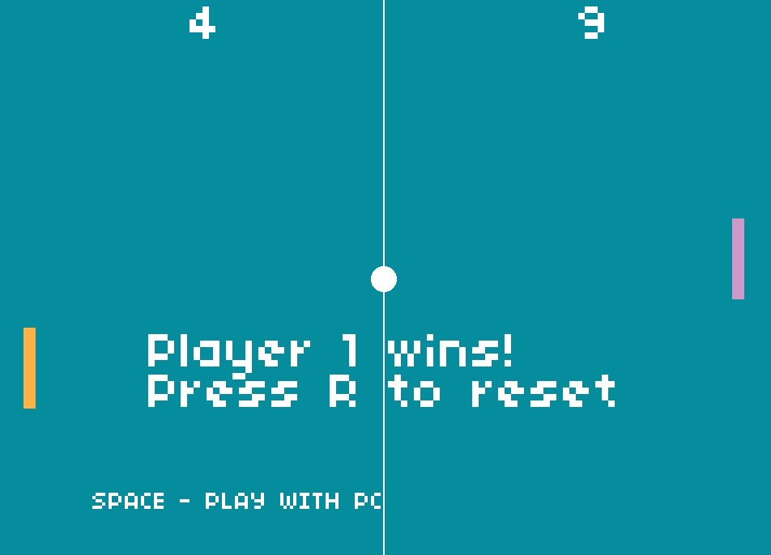

PONG
Reedycja klasycznej gry Pong wydanej w 1972 roku na Atari. Nowa wersja
gry została napisana przy wykorzystaniu języka C oraz biblioteki Allegro
5. Rozgrywka polega na odbijaniu piłki i osiągnięciu wyższego wyniku od
przeciwnika.
Repozytorium na github
Funkcje i szybki tutorial:
Pierwsze uruchomienie
-
Po uruchomieniu gry użytkownik ma możliwość ustawienia maksymalnego
wyniku (3, 6 lub 9 punktów wymaganych do zwycięstwa), dostosowania
koloru paletek obu graczy (do wyboru fioletowy, biały, czerwony,
pomarańczowy, zielony oraz niebieski), a także koloru tła (tutaj wybór
między czarnym, szarym, fioletowym lub niebieskim). Wybrane przez
użytkownika ustawienia zostaną zapisane i wczytane przy ponownym
uruchomieniu.

Początek gry
-
Po zatwierdzeniu ustawień klawiszem ENTER gra przejdzie do głównego
ekranu gry. Rozgrywka rozpoczne się, gdy któryś z graczy wykona ruch.
Gracz może swobodnie przełączać między grą z drugim graczem na tej
samej klawiaturze, bądź z komputerem za pomocą klawisza SPACE.

Rozgrywka
-
Rozgrywka polega na odbijaniu piłki i zdobywaniu punktów. Piłka odbija
się od paletek graczy i ścianek górnych i dolnych. Jeżeli piłka
wpadnie za paletkę gracza, to przeciwnik zdobywa punkt. Po osiągnięciu
określonego progu punktów wybranego na początku rozgrywki gra
wyświetli informację o zwycięzcy i zapisze datę i wynik rozgrywki w
lokalizacji /files/scores.txt.

Sterowanie:
-
Ogólne:
- 3/6/9 - zmiana maksymalnego wyniku
- ←/→ - zmiana koloru Player 1
- A/D - zmiana koloru Player 2
- Q/E - zmiana koloru tła
- SPACE - przełącza między grą z komputerem/drugim graczem
- R - restartuje rozgrywkę
- ESC - wyjście z gry/powrót do ustawień
-
Player 1:
-
Player 2:
Kompilacja:
Gra była tworzona i testowana na systemie Windows 11.
Do skompilowania pliku gry game.c wymagana jest biblioteka Allegro 5 (w
przypadku systemu Windows najłatwiej ją zainstalować za pomocą NuGet
bezpośrednio w Visual Studio bądź za pomocą MinGW w MSYS2).
Link do oficjalnej wiki biblioteki Allegro 5
Polecenie dla systemu Windows:
gcc game.c -o game.exe -lallegro -lallegro_font -lallegro_ttf
-lallegro_primitives -lallegro_audio -lallegro_acodec
Linux:
gcc game.c -o game $(pkg-config allegro-5 allegro_font-5
allegro_primitives-5 allegro_audio-5 allegro_acodec-5 --libs --cflags)
Jeżeli po kompilacji występują problemy z uruchomieniem gry, upewnij się, że
w lokalizacji pliku znajdują się foldery: files, font i sounds zawierające
kolejno pliki scores.txt, settings.txt w files, font.ttf w font oraz
paddle.wav, score.wav, wall.wav w sounds.